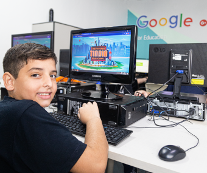
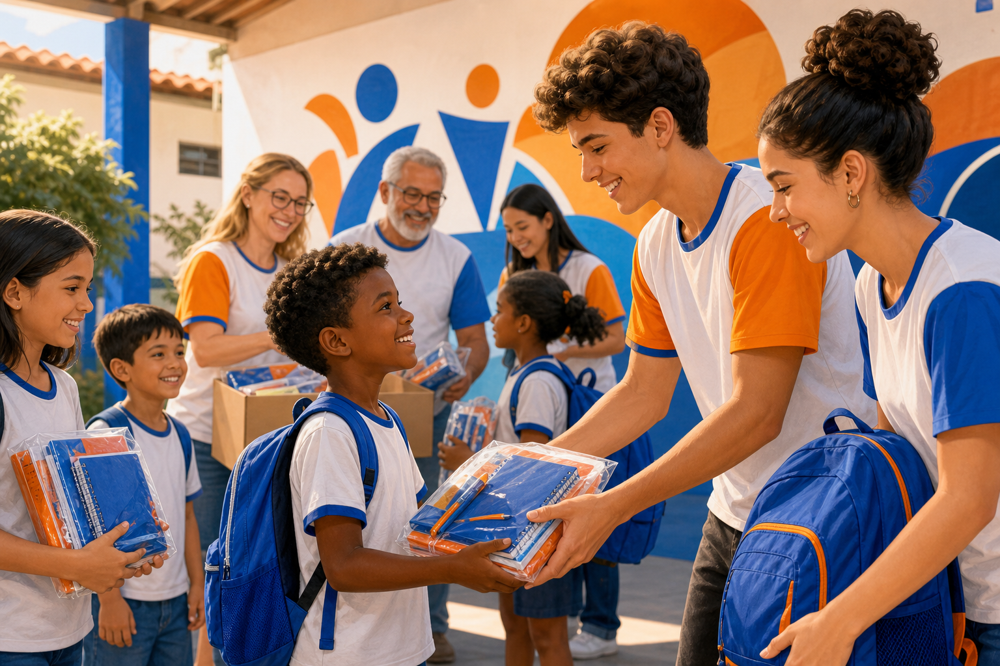
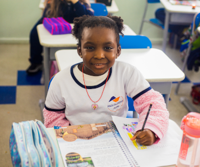
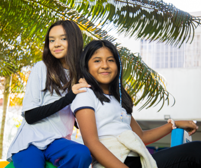
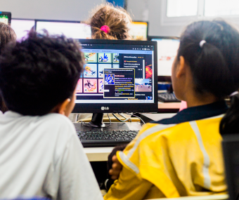
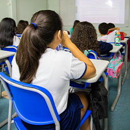
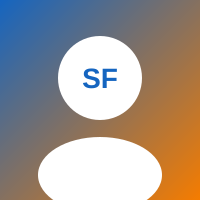

Educação financeira
Preparação para o mundo real com a plataforma Tindin.
“Plantamos oportunidades no coração das crianças.”
Arrecadação e montagem de kits escolares e de higiene para crianças em vulnerabilidade — com design, código e solidariedade da nossa comunidade escolar.


Escola completa com programa bilíngue · Aclimação, Cambuci e Vila Monumento — São Paulo
O Semear Futuro nasce na comunidade de uma instituição que forma cidadãos comprometidos com justiça, solidariedade e educação socioemocional — valores alinhados ao nosso projeto de voluntariado.
Referência na região, o colégio integra inglês na rotina diária, tecnologia, robótica e programas como “O Líder em Mim”, preparando alunos para o século XXI.

Preparação para o mundo real com a plataforma Tindin.

Inglês lúdico no dia a dia: fala, escuta, escrita e leitura.

“O Líder em Mim” — transformação na comunidade escolar.

Google for Education, games, apps e robótica no currículo.



Endereço: Rua Mazzini, 61 — Aclimação, São Paulo — SP
Site oficial do colégioImagens integradas do site oficial colegiopaulodetarso.com.br
Ano Internacional dos Voluntários para o Desenvolvimento Sustentável
Voluntariado é a dedicação de tempo, talento e solidariedade sem remuneração, em benefício da coletividade. Na escola, educa para cidadania, empatia e responsabilidade social.
A ONU declarou 2026 o Ano Internacional dos Voluntários para o Desenvolvimento Sustentável, alinhado aos Objetivos de Desenvolvimento Sustentável (ODS).
O Semear Futuro responde a esse chamado mobilizando a Escola Paulo de Tarso em favor da infância vulnerável.
Por que essa causa importa
Crianças em situação de vulnerabilidade social enfrentam falta de recursos: alimentação, moradia, material escolar e cuidados de saúde — o que afeta aprendizado e autoestima.
O Semear Futuro atende crianças de 6 a 14 anos, com famílias encaminhadas pela escola e parceiros comunitários, sempre com respeito e sigilo.
0
Cerca de um terço das crianças viviam em lares abaixo da linha de pobreza.
1 em 4
Muitas famílias não conseguem comprar todos os itens da lista no início do ano.
0
Apoio comunitário devolve dignidade e abre portas para um futuro melhor.
Local, datas e papel dos voluntários
Arrecadar e montar kits escolares e de higiene para crianças em vulnerabilidade.
Campanha de arrecadação e mutirão para separar, embalar e etiquetar os kits.
Salão multiuso e pátio coberto da Escola Paulo de Tarso.
Coleta: 1–15 ago/2026 · Mutirão: 22 ago/2026, 8h–12h
Preencha o formulário — dados salvos no seu navegador

Nome [Seu nome ou grupo]
Turma [2º EM — Turma A]
Escola Paulo de Tarso
Interface premium com glassmorphism, perspectiva 3D, parallax no scroll e animações via JavaScript puro — sem frameworks. localStorage registra inscrições, contador e tema.
Substitua nome, turma e foto antes da apresentação.